Dress Up reports · ^du_report(5) · 2026-10-18 · about Messed Up Dress Up, a game made with M and N · after ^du_report(4)
Always be knolling
What did the two full-screen designers, 🎵 Music and 🗺️ World design, do the same way that the rest of Dress Up's panels do not, and should every panel move to it? Read from the game's code at 0.0.204 (every row each tab declares, and which a player sees in each place), with pictures of the panels as they are and mockups of what they could be (^ticket(279)).
Short answers.
- The two designers share one way of laying out a panel, 13 choices in all: one way in and out, the rest of the page cleared, a slim bar, cards in a grid, boxes within boxes, kinds told apart by a faint tint, fewer words, and a row on one line. The world designer adds the game itself as its first card. Each choice was asked for along the way (tickets 159, 210, 224, 226, 231, 250), and none of it has reached the other 17 tabs.
- The 🏞️ Background tab is the biggest of them by far: 1,337 rows in 100 groups, 81% of them the three castles' rooms. In a place, a player sees 9 rows (the forest) to 50 (outside a castle), one under the other in a narrow column, the groups as dashed boxes.
- The proposal: one approach for every panel, nine rules (below): a box for each thing you can see or hear, named once; nesting shown by boxes inside boxes alone; everything laid out in plain view, in order (knolled); the thing shown, not just named; and every big tab a designer with the game as its first card, its boxes mirroring what is in the picture.
- Three before and afters: the castle's color themes (one decision in one place, its colors shown), the bubble themes (three cards, each with its bubble drawn), and a full-screen 🏞️ Background designer (the game as its first card; the place picked from pictures of the places; what stands in the place as a card each, with its picture).
- Found on the way: the house's 🧸 toys slider never shows (two rows share a key), and the bubble themes' on/off switches look the same on and off.
Four ideas
Knolling. Laying out the things you are working with, at right angles, grouped by kind, all in plain view. The word is said to come from Frank Gehry's furniture shop in 1987, where Andrew Kromelow squared up the tools that way. The artist Tom Sachs made "always be knolling" a rule of his studio: put away what you are not using, group what you are, and lay it out so that you can see all of it. For a panel: each thing's controls together, in its own place, aligned with its neighbours, nothing hidden in a list that scrolls past.
Boxes within boxes, with little visual noise. Sub-structure should be visible as structure: a part of a thing sits in a box inside that thing's box, and that is all the decoration it needs. No dashed borders, no repeated names, no instructions in a label.
Fractal organization. The same shapes at every scale: a tab is a box of boxes, a box is a box of rows, a row a line of chips. Learn one level and you can read them all; zooming in or out changes the scale, not the rules.
Mirror worlds. David Gelernter's Mirror Worlds (1991), subtitled "the day software puts the universe in a shoebox", imagines software models of the world that you can look into whole and then zoom into, part by part: a view he called topsight. The world designer is a small one already: the game's world as a grid of squares, each a picture of its place, and the game itself in a card beside it. A designer for each panel would mirror what that panel changes: the place, the friend, the music.
What the two designers do alike
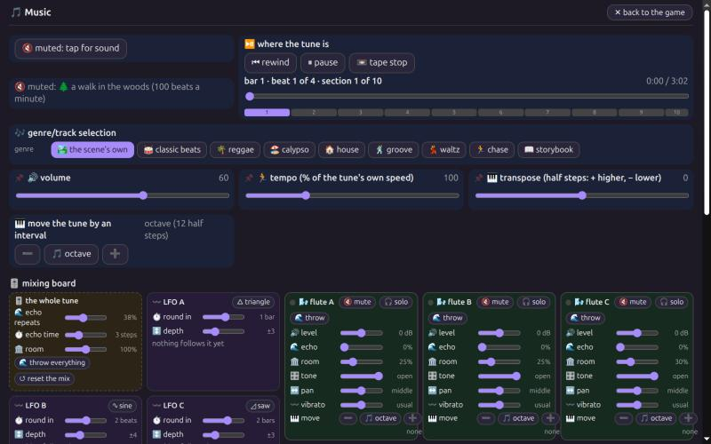
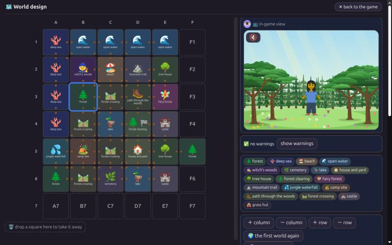
🎵 Music and 🗺️ World design, full screen, at 1280 × 800 (0.0.204; shown smaller here). Each has a slim bar with ✕ back; the music's mixing board is a card of cards, its strips tinted by kind; the world designer's grid is a picture of each place, and its first card on the right is the game itself.
| choice | what it is | where |
|---|---|---|
| one way in, one way out | each tab's first row is a full-screen chip ("⛶ the music, full screen", "⛶ the world designer, full screen"); ✕, Escape or leaving the browser's full screen all go back | js/22-full-screen.js:33, 60, 110-119 |
| the page cleared | the picture's stage, the divider, the title and the 19 tabs hidden; the side panel the whole window | style.css:87-93 |
| a slim bar | the tab's name and a small ✕ back, the panel's frame gone (ticket 210: the music full screen was "especially large and over-stated"; full screens "more compact, and sleek looking") | style.css:94-105 |
| cards in a grid | auto-fill grids, 330 px (Music) and 280 px (World) wide at least, 8 px apart; wide things span the row | style.css:106, 113, 133-135 |
| boxes within boxes | the mixer's strips, and the square's things, each a card inside the card | style.css:311-326, 140-142 |
| kinds by tint | --mu-main, --mu-mix, --mu-lfo, --mu-inst; a world square tinted by its place | style.css:4-18, 435-460 |
| fewer words | a row's label hidden where the bar names the tab; the tune picker without dashed boxes | style.css:122-123, 339-345 |
| emoji first | every bar, card and strip named emoji first | agent-instructions.md:78 |
| one column when narrow | the grids fold to one column; the world's split, cards and in-game view only from 900 px | style.css:114-124, 154 |
| a row on one line | a knob: its label (6.2em), the slider, its value (3.8em) | style.css:365-372 |
| the game as its first card (World) | the live picture moved into the right side's first card, sticky, folded away by its 👁️ (ticket 231) | js/22-full-screen.js:84-108 |
| remembered in the browser | the world's split, its view folded or not, its warnings shown or not | js/20-controls.js:1478; js/22-full-screen.js:79-105; js/25-world.js:208-219 |
| the music's look, carried back | ticket 250 gave the Music tab outside full screen the same cards | style.css:107-111 |
Where they differ: Music opens from the game's full screen (🎚️) as well as its tab; World only from its tab; Music hides the picture; World shows it as a card, from 900 px wide only; World keeps three things in the browser; Music none. Left unfinished: the in-game view only on windows 900 px wide or more; the 56 px bar's height written into the CSS and fitPic; stale comments (the world designer's "first piece is coming"; "the three LFOs" where there are seven; the tunes picker's dashed boxes) and two stale lines in agent-instructions.md (.world-main and .world-side; the letters "full screen only").
The panels as they are
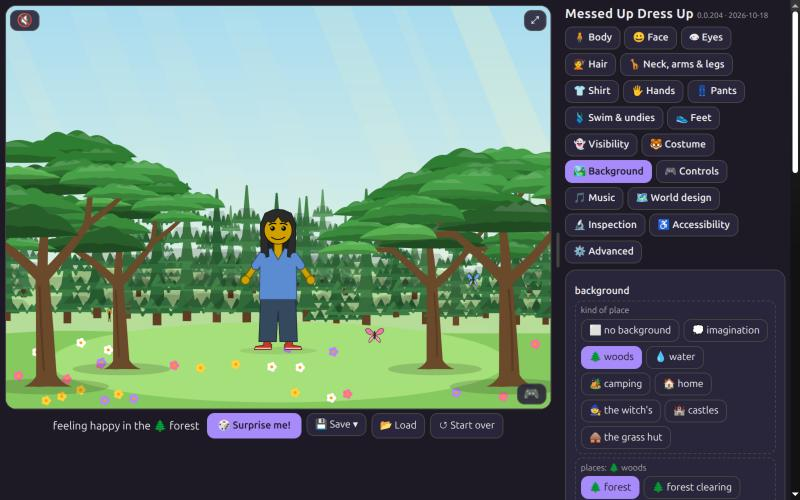
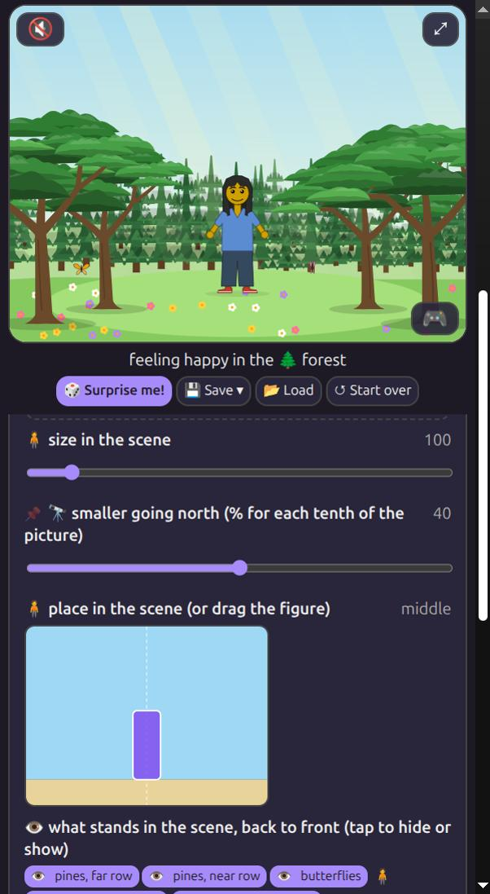
The 🏞️ Background tab in the forest, at 1280 × 800 (left, smaller) and on a narrow window (right): under the 19 tabs, the kinds of place and the places as chips in dashed boxes, then one row under another.
| where Background's 1,337 rows come from | rows | share |
|---|---|---|
| the three castles | 1,087 | 81% |
| the tree house | 97 | 7% |
| 🔭 smaller going north, one per place | 30 | 2% |
| bubble space | 20 | 1% |
| everything else | 103 | 8% |
Every tab
| tab | rows declared | groups | shown at the defaults |
|---|---|---|---|
| 🧍 Body | 8 | 1 | 7 |
| 😀 Face | 31 | 0 | 22 |
| 👁 Eyes | 15 | 0 | 13 |
| 💇 Hair | 4 | 0 | 4 |
| 🦒 Neck, arms & legs | 12 | 0 | 11 |
| 👕 Shirt | 8 | 0 | 6 |
| 🖐 Hands | 15 | 0 | 4 |
| 👖 Pants | 6 | 0 | 3 |
| 🩱 Swim & undies | 7 | 0 | 1 |
| 👟 Feet | 8 | 0 | 4 |
| 👻 Visibility | 9 | 0 | 9 |
| 🐯 Costume | 46 | 0 | 1 |
| 🎮 Controls | 22 | 6 | 22 |
| 🎵 Music | 10 | 0 | 10 |
| 🗺️ World design | 2 | 0 | 2 |
| 🔬 Inspection | 4 | 0 | 4 |
| ♿ Accessibility | 3 | 0 | 3 |
| ⚙️ Advanced | 1 | 0 | 1 |
| 🏞️ Background | 1,337 | 100 | 9 to 50 |
🎵 Music's 10 rows include the mixing board, about 120 controls for a tune of 14 parts; 🗺️ World design's 2 include the whole designer.
Before and after
The castle's color themes
A castle has two themes, A and B: each two flag colors, how they go together (↔️ in turn, ▥ stripes, ▦ checkers) and a carpet. A is the castle's own, its flags outside too; B starts as A with its colors swapped. Today the colors are set in one group ("🎨 N's castle: its color themes", 8 rows), and each room that takes a theme chooses one in its own box, by name: "🎨 theme A" or "🎨 theme B", with no color to see. One decision in two places. After: the two themes side by side, each drawn as its flag; each room shows its theme as its flag's two colors, and a tap swaps it; the rooms that keep their own colors say so.
before (castle N, room 1)
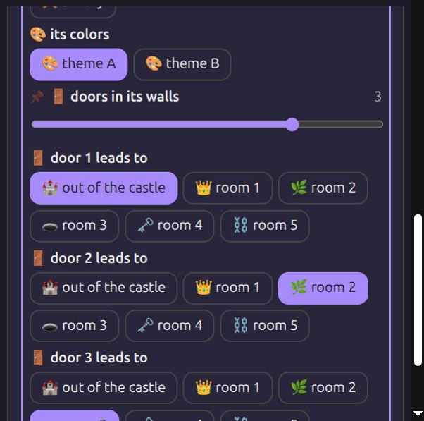
after
The bubble themes
Three themes, A (always) and B and C (each switched on or off), five rows each: colour, size, shine, sparkle, sparkle colour. They are in 🏞️ Background, for bubble space (20 rows, 4 groups), and again in 🎮 Controls, for blowing bubbles, where B and C have a second, separate on and off. Every label repeats its theme's letter ("🅱️ colour", "🅱️ size"), and the on and off switch is a chip named "🅱️ theme B" both ways that looks the same on and off. After: three cards side by side, each headed by its bubble, drawn from its settings; its switch at its corner; no letter repeated inside.
before (bubble space, theme B on)
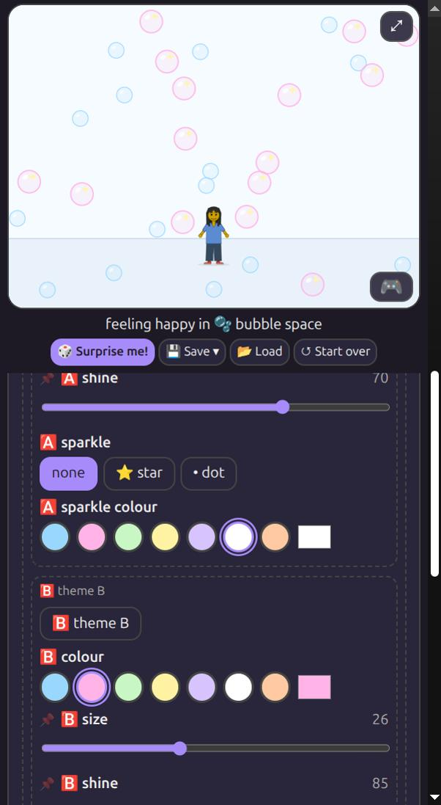
after
🏞️ Background, as a designer
The world designer, made for one place: the same slim bar and ✕ back, the game as the first card on the right, and on the left the place's boxes, each mirroring something in the picture. The place is picked from pictures of the places (the picture archive's), grouped by kind; the place's own settings are one box; what stands in the place is a card each, its picture clipped from the scene (OBJECTS.md's), lit in the game while pointed at (the 🔬 overlays already outline each one) and hidden with a tap; the friend here, the place's ways and its music are a box each. The side panel keeps the same boxes, smaller, for quick changes during play.
before (the forest's rows; the lake has 17)
after (the lake, full screen)
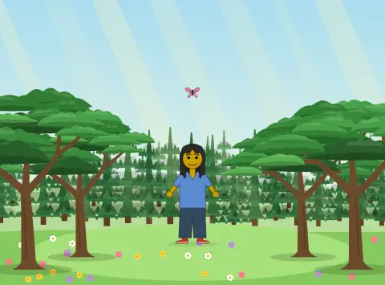
🌲 forest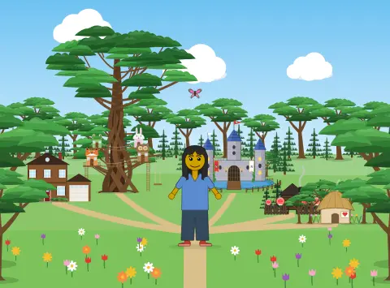
🌲 clearing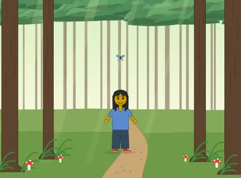
🥾 path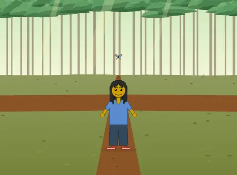
🛤️ crossing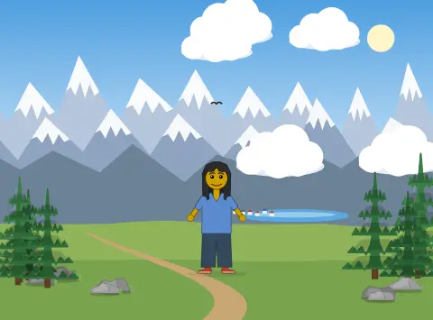
⛰️ trail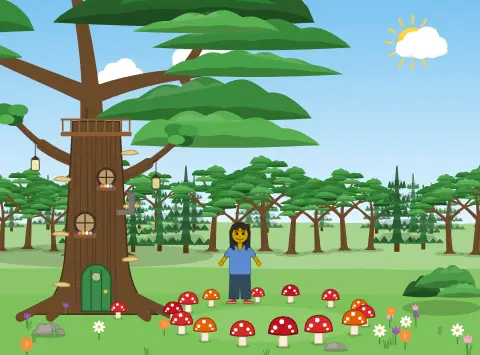
🧚 fairies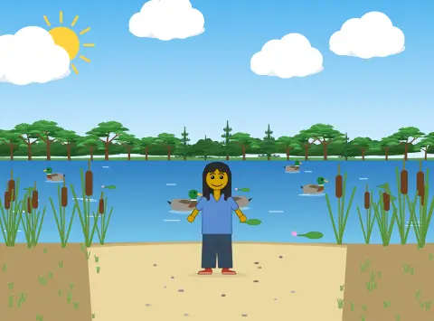
🦆 lake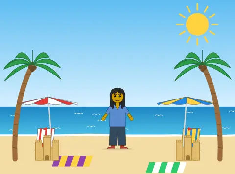
🏖️ beach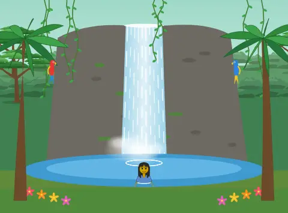
💦 waterfall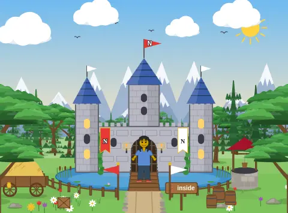
🏰 castle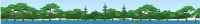
far wood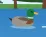
duck 1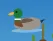
duck 5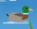
duck 3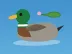
🙈 duck 2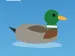
duck 4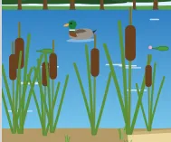
cattails, left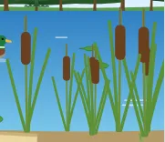
cattails, right
The mockups are drawn in this page, in the game's own dark colors; their settings, defaults, objects and tune are the lake's and castle N's as the game has them at 0.0.204. The live game card is the lake's archived picture.
A global shift: the rules
- A box for each thing you can see or hear: a place, a thing standing in it, a part of the friend, a channel, a theme. Its name once, at its top, emoji first; nothing inside repeats it (no "🅱️ colour" inside theme B).
- Nesting by boxes alone: each level a shade lighter than the one it is in, no dashed lines; kinds told apart by a faint tint, as the music's strips and the world's squares are.
- Knolled: boxes in a grid, things of a kind the same size and lined up, everything a box holds in plain view. A 👁️ fold only for the big ones, remembered in the browser, as the world's view is.
- A row on one line: its emoji and two or three words, its control, its value, the music's knob as the model. What a label explains today ("% for each tenth of the picture", "0 = a blur") moves into a hint shown on pointing.
- Show the thing: a color as a swatch, a theme as what it draws (a bubble, a flag), a place as its picture, a thing standing in a place as its own picture.
- One decision, one place: a theme chosen where its colors are set, or its colors shown where it is chosen; a setting used in two tabs is one box shown in both, and one setting, not two.
- Mirror the picture: every big tab a designer that opens with the game as its first card; each box mirrors something in it; pointing at a box lights its thing in the game, and pointing at a thing in the game finds its box.
- The same at every scale: tab, designer, box, box inside it, row, chip; the side panel is the designer's boxes, smaller, not a different layout.
- Keep it fast: a box is built once and refreshed by what it shows, and show-when rules stay lookups (ticket 167: the Background tab's refresh once held swimming at 2 to 15 frames a second).
In code, three pieces carry all of it: a box (its name, its tint, its fold, its grid of what it holds), the row the music's knobs already are, and the designer's shell the two full screens share (the bar, ✕, the cleared page, the game card). TABS would say which boxes a tab has, and SHOWN_WHEN would show and hide whole boxes as it shows and hides rows now.
Found on the way
- the house's 🧸 toys slider never shows. "toys" is the key of two rows (🧸 toys on the lawn, at the house; 🧸 things in the room, inside the tree house) and SHOWN_WHEN defines background.toys twice; the second (inside the tree house) wins, so at the house the slider is hidden, and inside the tree house both show, for the same setting (
js/20-controls.js:359, 376, 821, 901) - the bubble themes' on/off shows nothing. see above (
js/20-controls.js:100, 108, 515; style.css:186) - long labels with instructions in them. "🔭 smaller going north (% for each tenth of the picture)", "💀 skulls: biggest size (% of the usual; the smallest is the usual)", "… detail (0 = a blur, 100 = all of it)" (
js/20-controls.js:318, 344, 487) - colour and color. the bubble rows say colour; the rest of the game color (
js/20-controls.js:93-113)
What next
- 1. The pieces: a box, the one-line row and the designer's shell, shared by every tab (CSS tokens for the shades and tints; TABS rows grouped into boxes); the two full screens moved onto them, the same as they look now.
- 2. 🏞️ Background as a designer: full screen with the game as its first card; the places as pictures; the place's own box; what stands in it as cards with their pictures, lit in the game while pointed at; the friend, the ways and the music each a box.
- 3. The castle's themes in one place: both drawn as flags; each room's theme shown by its colors and swapped with a tap; the rooms that keep their own colors saying so.
- 4. The bubble themes as three cards, each with its bubble drawn; their on and off visible (a bug today); one on and off for each theme, or two plainly named.
- 5. Fixed: the house's 🧸 toys, two rows sharing a key, its slider never shown at the house.
- 6. The other tabs, biggest first: 🐯 Costume (46 rows), 😀 Face (31), 🎮 Controls (22), 👁 Eyes and 🖐 Hands (15 each), and the rest; each as its boxes, then, where it has many, a designer of its own.
- 7. Tidy what the survey found stale: three comments and two lines of agent-instructions.md about the full screens; "colour" and "color".
- 8. Measure the full-screen designer's speed (ticket 289, not measured for this report): many place pictures at once were slow on the black laptop, so before step 2 is built, its place pictures drawn live, as still pictures and as bitmaps, and the friend's walk and drag with the designer open, at normal speed and on the slow tiers. The numbers come back here as a dated note.
What we got wrong on the way
- Our first background mockup invented the forest's settings (clouds, trees, flowers, day and night): the forest has none of its own. The mockup is the lake now, with the lake's real five.
- Our first castle mockup gave every room a theme; only rooms with doors of their own take one (castle N, at its defaults: the king's room alone).
How this was put together
The code. a read-only survey of the panels' code (js/20-controls.js TABS and SHOWN_WHEN, js/22-full-screen.js, style.css), with TABS walked and SHOWN_WHEN run in node on the game's own parts at their defaults, as tools/check_load.mjs runs them; the pictures from the game in the desktop app's browser. The game is 0.0.204 (6e787a8). Rows declared: TABS walked, groups expanded; rows shown: SHOWN_WHEN run with each place set as the background, everything else at its defaults (two kinds of row, things standing in a place and seats, hide themselves when they have nothing to list).
The pictures. the game 0.0.204 at http://localhost:8133/, in the desktop app's browser (Chrome 152): wide ones at 1280 x 800 shown in a narrower pane, so smaller; narrow ones at the pane's own width. mockups drawn in this page (HTML, the game's own dark colors); the lake's objects are OBJECTS.md's pictures, the places the picture archive's thumbnails.
The data is here twice: embedded in this page (<script type="application/json" id="report-data">) and as 005/data/report.json. The page is built from it and from the mockups by 005/drivers/build.py.